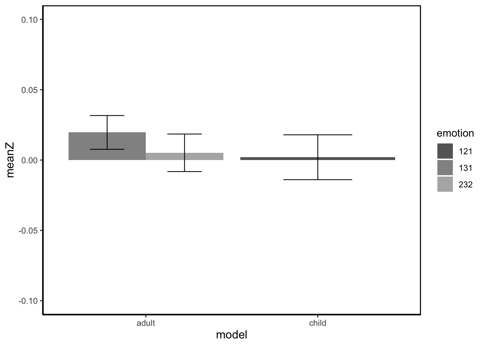

Last updated: 2020-09-12
Checks: 6 1
Knit directory: RILEY_Hons/
This reproducible R Markdown analysis was created with workflowr (version 1.6.2). The Checks tab describes the reproducibility checks that were applied when the results were created. The Past versions tab lists the development history.
The R Markdown is untracked by Git. To know which version of the R Markdown file created these results, you’ll want to first commit it to the Git repo. If you’re still working on the analysis, you can ignore this warning. When you’re finished, you can run wflow_publish to commit the R Markdown file and build the HTML.
Great job! The global environment was empty. Objects defined in the global environment can affect the analysis in your R Markdown file in unknown ways. For reproduciblity it’s best to always run the code in an empty environment.
The command set.seed(20200903) was run prior to running the code in the R Markdown file. Setting a seed ensures that any results that rely on randomness, e.g. subsampling or permutations, are reproducible.
Great job! Recording the operating system, R version, and package versions is critical for reproducibility.
Nice! There were no cached chunks for this analysis, so you can be confident that you successfully produced the results during this run.
Great job! Using relative paths to the files within your workflowr project makes it easier to run your code on other machines.
Great! You are using Git for version control. Tracking code development and connecting the code version to the results is critical for reproducibility.
The results in this page were generated with repository version a258016. See the Past versions tab to see a history of the changes made to the R Markdown and HTML files.
Note that you need to be careful to ensure that all relevant files for the analysis have been committed to Git prior to generating the results (you can use wflow_publish or wflow_git_commit). workflowr only checks the R Markdown file, but you know if there are other scripts or data files that it depends on. Below is the status of the Git repository when the results were generated:
Ignored files:
Ignored: .Rhistory
Ignored: .Rproj.user/
Ignored: analysis/child_bar_plot.png
Ignored: analysis/child_cheek_plot.png
Ignored: analysis/child_cheekbin_plot.png
Untracked files:
Untracked: analysis/11_plotting_cheek.Rmd
Untracked: analysis/12_plotting_brow.Rmd
Untracked: analysis/13_adult_child_analysis.Rmd
Untracked: analysis/14_plotting_adult_child.Rmd
Untracked: analysis/testing_zscore.Rmd
Untracked: child_bar_plot.png
Untracked: child_cheek_plot.png
Untracked: data/adult_child_combined/zdiff_binscreened2.csv
Unstaged changes:
Modified: analysis/10_brow_analysis.Rmd
Modified: analysis/4_clean_baseline.Rmd
Modified: analysis/5_calculating_zscores.Rmd
Modified: analysis/6_bin_outliers.Rmd
Modified: analysis/7_plotting.Rmd
Modified: analysis/8_analysing.Rmd
Modified: analysis/9_cheek_analysis.Rmd
Note that any generated files, e.g. HTML, png, CSS, etc., are not included in this status report because it is ok for generated content to have uncommitted changes.
There are no past versions. Publish this analysis with wflow_publish() to start tracking its development.
library(tidyverse)── Attaching packages ─────────────────────────────────────────────────────────────────────────────────── tidyverse 1.3.0 ──✓ ggplot2 3.2.1 ✓ purrr 0.3.4
✓ tibble 3.0.3 ✓ dplyr 1.0.0
✓ tidyr 1.1.0 ✓ stringr 1.4.0
✓ readr 1.3.1 ✓ forcats 0.4.0── Conflicts ────────────────────────────────────────────────────────────────────────────────────── tidyverse_conflicts() ──
x dplyr::filter() masks stats::filter()
x dplyr::lag() masks stats::lag()library(here)here() starts at /Users/rileyferguson/Desktop/RILEY_Honslibrary(lme4)Loading required package: Matrix
Attaching package: 'Matrix'The following objects are masked from 'package:tidyr':
expand, pack, unpacklibrary(lmerTest)
Attaching package: 'lmerTest'The following object is masked from 'package:lme4':
lmerThe following object is masked from 'package:stats':
steplibrary(broom.mixed)Registered S3 method overwritten by 'broom.mixed':
method from
tidy.gamlss broomlibrary(ggplot2)
library(ggeasy)
library(dplyr)
library(RColorBrewer)
library(papaja)
library(lubridate)
Attaching package: 'lubridate'The following object is masked from 'package:here':
hereThe following object is masked from 'package:base':
datedata <- read_csv(here::here("data", "adult_child_combined", "clean_no_bl_outliers.csv"))brow_zscore <- data %>%
pivot_wider(names_from = muscle, values_from = rms) %>%
group_by(pp_no) %>%
select(1:7) %>%
mutate(zbrow = scale(brow, center = TRUE, scale = TRUE))
summary(brow_zscore) pp_no model emotion bin
Length:33814 Length:33814 Min. :121.0 Length:33814
Class :character Class :character 1st Qu.:232.0 Class :character
Mode :character Mode :character Median :424.0 Mode :character
Mean :340.6
3rd Qu.:434.0
Max. :535.0
bin_no trial brow zbrow.V1
Min. : 0 Length:33814 Min. : 0.1886 Min. :-3.1176
1st Qu.: 2 Class :character 1st Qu.: 4.6377 1st Qu.:-0.5069
Median : 5 Mode :character Median : 7.0499 Median :-0.1799
Mean : 5 Mean : 8.6066 Mean : 0.0000
3rd Qu.: 8 3rd Qu.: 10.4639 3rd Qu.: 0.2854
Max. :10 Max. :290.7781 Max. :16.7866
NA's :2048 NA's :2048 brow_z <- brow_zscore %>%
mutate(muscle = "brow") %>%
select(pp_no, model, emotion, bin, trial, muscle, zbrow)brow_z_wide <- brow_z %>%
pivot_wider(names_from = bin, values_from = zbrow) %>%
rename(BL = bin_0)brow_z_diff <- brow_z_wide %>%
mutate(diff_bin1 = bin_1 - BL,
diff_bin2 = bin_2 - BL,
diff_bin3 = bin_3 - BL,
diff_bin4 = bin_4 - BL,
diff_bin5 = bin_5 - BL,
diff_bin6 = bin_6 - BL,
diff_bin7 = bin_7 - BL,
diff_bin8 = bin_8 - BL,
diff_bin9 = bin_9 - BL,
diff_bin10 = bin_10 - BL) %>%
select(-BL, - starts_with("bin"))brow_zdiff_long <- brow_z_diff %>%
pivot_longer(names_to = "bin", values_to = "zdiff", diff_bin1:diff_bin10) %>%
mutate(zbrow = scale(zdiff, center = TRUE, scale = TRUE))
summary(brow_zdiff_long) pp_no model emotion trial
Length:30740 Length:30740 Min. :121.0 Length:30740
Class :character Class :character 1st Qu.:232.0 Class :character
Mode :character Mode :character Median :424.0 Mode :character
Mean :340.6
3rd Qu.:434.0
Max. :535.0
muscle bin zdiff.V1 zbrow.V1
Length:30740 Length:30740 Min. :-6.5444 Min. :-6.0955
Class :character Class :character 1st Qu.:-0.3018 1st Qu.:-0.3501
Mode :character Mode :character Median :-0.0364 Median :-0.0845
Mean : 0.0257 Mean : 0.0000
3rd Qu.: 0.2292 3rd Qu.: 0.2248
Max. :16.6187 Max. :15.9729
NA's :1862 NA's :1862 brow_zdiff_long$emotion <- as.factor(brow_zdiff_long$emotion)
plot <- brow_zdiff_long %>%
filter(emotion %in% c("121", "131", "232", "343")) %>%
group_by(emotion, model) %>%
summarise(meanZ = mean(zdiff, na.rm = TRUE), sd_RMS = sd(zdiff, na.rm = TRUE), n = n(), stderr = sd_RMS/sqrt(n)) %>%
ggplot(aes(x = model, y = meanZ, fill = emotion)) +
geom_col(position = "dodge") +
theme_apa(base_size = 14) +
scale_fill_grey(start = 0.4, end = 0.7) +
geom_errorbar(aes(ymin = meanZ-stderr, ymax = meanZ+stderr), size = .4, width = .4, position = position_dodge(.9)) +
theme_classic() +
theme(panel.grid.major = element_blank(), panel.grid.minor = element_blank(), panel.background = element_rect(colour = "black", size = 1)) +
scale_y_continuous(limits = c(-0.1, 0.1)) +
easy_x_axis_title_size(size = 12) +
easy_y_axis_title_size(size = 12)`summarise()` regrouping output by 'emotion' (override with `.groups` argument)print(plot)
sessionInfo()R version 3.6.2 (2019-12-12)
Platform: x86_64-apple-darwin15.6.0 (64-bit)
Running under: macOS High Sierra 10.13.6
Matrix products: default
BLAS: /Library/Frameworks/R.framework/Versions/3.6/Resources/lib/libRblas.0.dylib
LAPACK: /Library/Frameworks/R.framework/Versions/3.6/Resources/lib/libRlapack.dylib
locale:
[1] en_AU.UTF-8/en_AU.UTF-8/en_AU.UTF-8/C/en_AU.UTF-8/en_AU.UTF-8
attached base packages:
[1] stats graphics grDevices utils datasets methods base
other attached packages:
[1] lubridate_1.7.4 papaja_0.1.0.9997 RColorBrewer_1.1-2 ggeasy_0.1.2
[5] broom.mixed_0.2.6 lmerTest_3.1-2 lme4_1.1-23 Matrix_1.2-18
[9] here_0.1 forcats_0.4.0 stringr_1.4.0 dplyr_1.0.0
[13] purrr_0.3.4 readr_1.3.1 tidyr_1.1.0 tibble_3.0.3
[17] ggplot2_3.2.1 tidyverse_1.3.0
loaded via a namespace (and not attached):
[1] httr_1.4.1 jsonlite_1.7.0 splines_3.6.2
[4] modelr_0.1.5 assertthat_0.2.1 statmod_1.4.34
[7] cellranger_1.1.0 yaml_2.2.1 numDeriv_2016.8-1.1
[10] pillar_1.4.6 backports_1.1.8 lattice_0.20-38
[13] glue_1.4.1 digest_0.6.25 promises_1.1.0
[16] rvest_0.3.5 minqa_1.2.4 colorspace_1.4-1
[19] htmltools_0.5.0 httpuv_1.5.2 plyr_1.8.5
[22] pkgconfig_2.0.3 broom_0.7.0.9001 haven_2.2.0
[25] scales_1.1.0 later_1.0.0 git2r_0.27.1
[28] farver_2.0.3 generics_0.0.2 ellipsis_0.3.1
[31] withr_2.1.2 TMB_1.7.18 lazyeval_0.2.2
[34] cli_2.0.2 magrittr_1.5 crayon_1.3.4
[37] readxl_1.3.1 evaluate_0.14 fs_1.3.1
[40] fansi_0.4.1 nlme_3.1-142 MASS_7.3-51.4
[43] xml2_1.2.2 tools_3.6.2 hms_0.5.3
[46] lifecycle_0.2.0 munsell_0.5.0 reprex_0.3.0
[49] compiler_3.6.2 rlang_0.4.7 grid_3.6.2
[52] nloptr_1.2.2.2 rstudioapi_0.11 labeling_0.3
[55] rmarkdown_2.3 boot_1.3-23 gtable_0.3.0
[58] DBI_1.1.0 reshape2_1.4.3 R6_2.4.1
[61] knitr_1.29 workflowr_1.6.2 rprojroot_1.3-2
[64] stringi_1.4.6 Rcpp_1.0.5 vctrs_0.3.1
[67] dbplyr_1.4.2 tidyselect_1.1.0 xfun_0.15
[70] coda_0.19-3